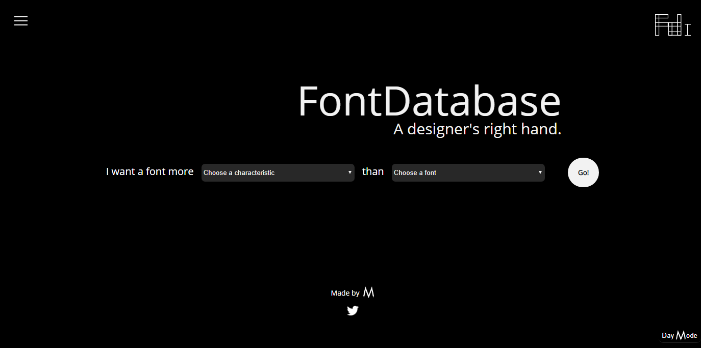
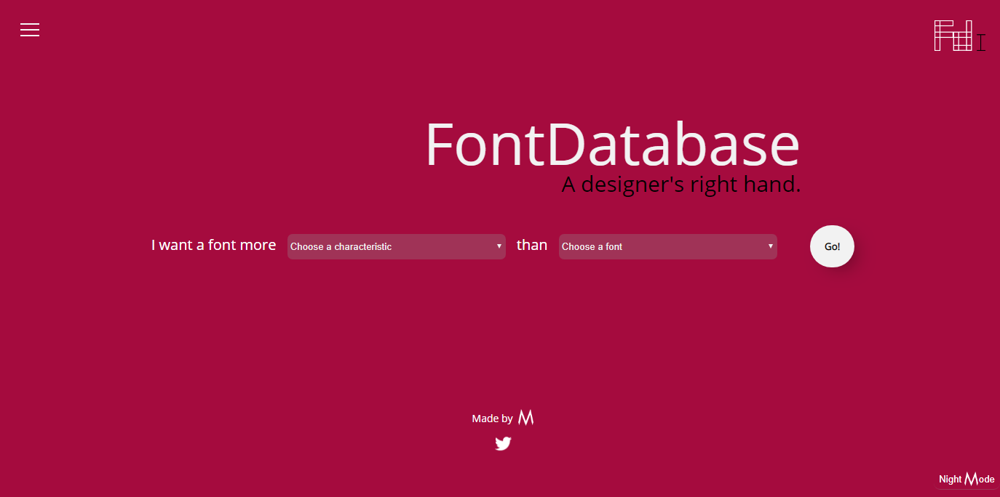
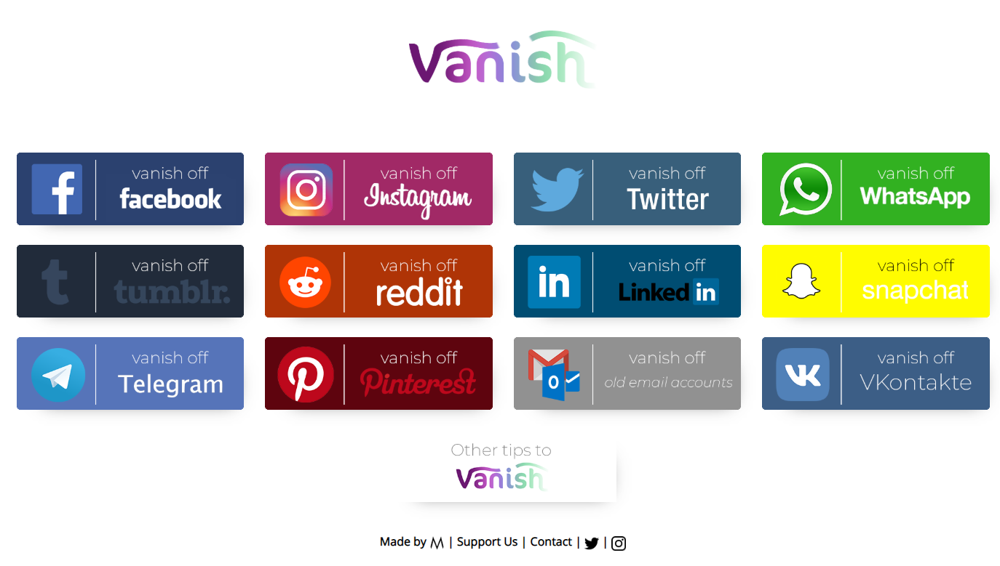

I founded The M Company in March 2018. It is a tech startup focused on simplifying and optimizing existing mobile and desktop devices to get the most productivity and efficiency out of them. Its name comes from the M theory, which looks to tie all quantum theories together in an elegant manner, just like The M Company hopes to simplify tech.
At The M Company, I am responsible for product design and development, taking projects from idea phase to production, as well as taking care of its social media presence and corporate identity. Its products have been featured on international media, and nominated for a PH award.
UI/UX, Product, and Web Design projects done for the company.
fontdatabase.app is a web application I designed and developed to help designers find alternative fonts. Using an algorithm, it can help users find fonts more (or less) serious, detailed, formal, etc. to the one they input. Users can also help the algorithm grow by suggesting fonts themselves.
FontDatabase was featured in Product Hunt and international media outlets such as Periodismo.com, wwwhatsnew, and TekCrispy.
 Vanish is a website that guides you through the process of deleting your online information, as well as how to back it up beforehand. Vanish was nominated and a finalist for a PH Award in January 2019.
Evoking the typical striking, overwhelming, messy look of sites of the late 90s/early 2000s, it reminds the visitors why exactly they are leaving social media: information overload.*
*Design-talk translation: It's ugly on purpose.
SoleMedia is a platform under development which aims to aggregate the content of the most used social media platforms, and create channels on each account for people to follow, to make people able to consume specific content they truly want to see.
I started designing and developing SoleMedia based on people's fixation with making the most out of their time using social media. The only apps that are remotely similar are focused on content management, rather than timeline aggregation.
I designed The M Tool Launcher starting off the idea of a superapp, and why it never took off. Since people want to have a choice when it comes to each of their phone's features (messaging apps, social media, among others), a single app that does everything will never suit more than one individual.
To solve this, The M Tool Launcher provides the benefits of acting like a superapp: reduces the time spend switching between apps, gives the experience of seamlessness navigation, all without sacrificing user choices.
The M Tool Launcher is currently under development.